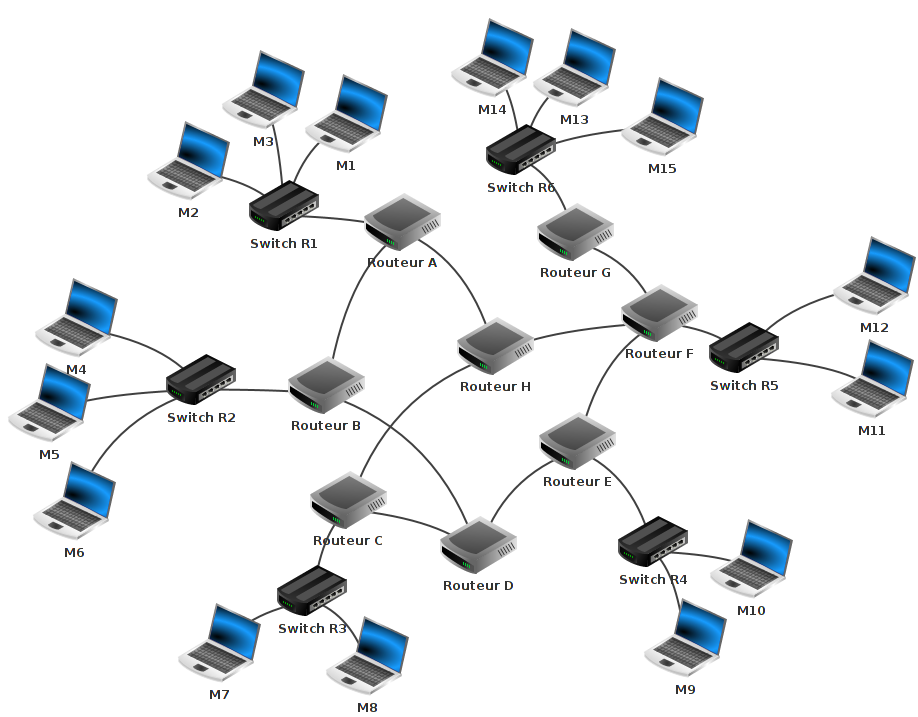
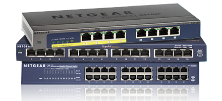
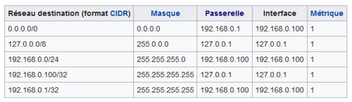

Exercices
Routage
1. Le routage pages 26 à 33 et fiche routage
Quelle est la différence entre LAN et WAN ?
Qu’est-ce qu’une MAC adresse ? Sur combien d’octet est-elle codée ?
Deux ordinateurs différents peuvent-ils posséder la même MAC adresse ? La même IP ?
Qu’est-ce qu’une passerelle ?
Un paquet de données n’a-t-il qu’un seul trajet possible entre émetteur et destinataire du paquet ? Quel en est l’intérêt ?
Un paquet de données a-t-il une durée de vie illimitée ? Que se passe-t-il alors pour lui ? Comment peut réagir le protocole TCP ?
Qu’est-ce qu’une table de routage ?
La table de routage connaît-elle tout le chemin entre l’émetteur et le récepteur du message ? Sinon, quelle partie connaît-elle ? Voir vidéo Inria
Précédemment, nous avons vu qu’internet est un « réseau de réseaux ». Nous avons aussi vu que les données sont transférées d'une machine à une autre sous forme de paquet de données. Comment ces paquets de données trouvent leur chemin entre deux ordinateurs ?
Voici la représentation d’un « mini internet simplifié » :

Nous avons sur ce schéma les éléments suivants :
15 ordinateurs : M1 à M15
6 switchs : R1 à R6
8 routeurs : A, B, C, D, E, F, G et H
Un switch est une sorte de « multiprise intelligente » qui permet de relier entre eux tous les ordinateurs appartenant à un même réseau, que nous appelerons "local" (nous verrons des exemples un peu plus bas). Pour ce faire, un switch est composé d’un nombre plus ou moins important de prises RJ45 femelles (un câble ethernet (souvent appelé « câble réseau ») possède 2 prises RJ45 mâles à ses 2 extrémités).

Un routeur permet de relier ensemble plusieurs réseaux, il est composé d’un nombre plus ou moins important d’interfaces réseau (cartes réseau). Les routeurs les plus simples que l’on puisse rencontrer permettent de relier ensemble deux réseaux (ils possèdent alors 2 interfaces réseau), mais il existe des routeurs capables de relier ensemble une dizaine de réseaux.
Revenons maintenant à l’analyse de notre schéma :
Nous avons 6 réseaux locaux, chaque réseau local possède son propre switch (dans la réalité, un réseau local est souvent composé de plusieurs switchs si le nombre d’ordinateurs appartenant à ce réseau devient important).
Les ordinateurs M1, M2 et M3 appartiennent au réseau local 1. Les ordinateurs M4, M5 et M6 appartiennent au réseau local 2. Nous pouvons synthétiser tout cela comme suit :
réseau local 1 : M1, M2 et M3
réseau local 2 : M4, M5 et M6
À faire vous-même 1
Complétez la liste ci-dessus avec les réseaux locaux 3, 4, 5 et 6
Voici quelques exemples de communications entre 2 ordinateurs :
cas n°1 : M1 veut communiquer avec M3
Le paquet est envoyé de M1 vers le switch R1, R1 "constate" que M3 se trouve bien dans le réseau local 1, le paquet est donc envoyé directement vers M3. On peut résumer le trajet du paquet par :
M1→R1→M3
cas n°2 : M1 veut communiquer avec M6
Le paquet est envoyé de M1 vers le switch R1, R1 « constate » que M6 n’est pas sur le réseau local 1, R1 envoie donc le paquet vers le routeur A. Le routeur A n'est pas connecté directement au réseau localR2 (réseau local de la machine M6), mais il "sait" que le routeur B est connecté au réseau local 2. Le routeur A envoie le paquet vers le routeur B. Le routeur B est connecté au réseau local 2, il envoie le paquet au Switch R2. Le Switch R2 envoie le paquet à la machine M6.
M1 → R1→ Routeur A → Routeur B → R2 → M6
cas n°3 : M1 veut communiquer avec M9
M1 → R1 → Routeur A → Routeur B → Routeur D → Routeur E → R4 → M9
Restons sur ce cas n°3 : comme vous l’avez peut-être constaté, le chemin donné ci-dessus n’est pas l’unique possibilité, en effet on aurait pu aussi avoir :
M1 → R1 → Routeur A → Routeur H → Routeur F → Routeur E → R4 → M9
Il est très important de bien comprendre qu’il existe souvent plusieurs chemins possibles pour relier 2 ordinateurs :
cas n°4 : M13 veut communiquer avec M9
Nous pouvons avoir : M13 → R6 → Routeur G → Routeur F → Routeur E → R4 → M9
ou encore : M13 → R6 → Routeur G → Routeur F → Routeur H → Routeur C → Routeur D → Routeur E → R4 → M9
On pourrait penser que le chemin "Routeur F → Routeur E" est plus rapide et donc préférable au chemin "Routeur F → Routeur H", cela est sans doute vrai, mais imaginez qu’il y ait un problème technique entre le Routeur F et le Routeur E, l’existence du chemin "Routeur F → Routeur H" permettra tout de même d’établir une communication entre M13 et M9. Parfois, on entend certains politiques ou journalistes évoquer « la coupure d’internet », peut être comprendrez-vous mieux maintenant que cela n’a aucun sens, car même si une autorité quelconque décidait de couper une partie des infrastructures, les paquets pourraient passer par un autre chemin.
À faire vous-même 2
Déterminer un chemin possible permettant d’établir une connexion entre la machine M4 et M14.
On peut se poser la question : comment les switchs ou les routeurs procèdent pour amener les paquets à bon port. Sans entrer dans les détails, car cela dépasse notre objectif, vous devez tout de même savoir qu’ils utilisent les adresses IP des ordinateurs.
Nous avons vu qu’une adresse IP était de la forme a.b.c.d (exemple : 192.168.1.5). Une partie de l’adresse IP permet d’identifier le réseau auquel appartient la machine et l’autre partie de l’adresse IP permet d’identifier la machine sur ce réseau.
Exemple : Soit un ordinateur M4 ayant pour adresse IP 192.168.2.1 Dans cette adresse IP "192.168.2" permet d’identifier le réseau (on dit que la machine M4 appartient au réseau ayant pour adresse 192.168.2.0) et "1" permet d’identifier la machine sur le réseau (plus précisément sur le réseau 192.168.2.0). M4, M5 et M6 sont sur le même réseau, l’adresse IP de M5 devra donc commencer par "192.168.2" (adresse IP possible pour M5 : 192.168.2.2). En revanche M7 n’est pas sur le même réseau que M4, M5 et M6, la partie réseau de son adresse IP ne pourra pas être "192.168.2" (IP possible pour M7 : 192.168.3.1).
En analysant la partie réseau des adresses IP des machines souhaitant rentrer en communication, les switchs et les routeurs sont capables d’aiguiller un paquet dans la bonne direction. Imaginons que le switch R2 reçoive un paquet qui est destiné à l’ordinateur M7 (adresse IP de M7 : 192.168.3.1). R2 "constate" que M7 n’est pas sur le même réseau que lui (R2 appartient au réseau d’adresse 192.168.2.0 alors que M7 appartient au réseau d’adresse 192.168.3.0), il envoie donc le paquet vers le routeur B...
À faire vous-même 3
En partant des exemples ci-dessus, donnez une adresse IP possible pour les ordinateurs suivants : M1 (en partant du principe que l'adresse de M2 est 192.168.1.3), M6 (en partant du principe que l'adresse de M4 est 192.168.2.1) et M8 (en partant du principe que l'adresse de M7 est 192.168.3.1).
Attention, les adresses IP (a.b.c.d) n’ont forcément pas les parties a, b et c consacrées à l’identification du réseau et la partie d consacrées à l’identification des machines sur le réseau : on rajoute souvent à l'adresse IP un "/" suivit du nombre 8, 16 ou 24
si ce nombre est 8 (exemple : 192.168.2.1/8), cela signifie que pour une adresse a.b.c.d/8, la partie a est consacrée à l'adresse réseau, le reste (b, c, d) est consacré à la partie machine de l'adresse IP. On aura donc une adresse réseau de la forme a.0.0.0
si ce nombre est 16 (exemple : 192.168.2.1/16), cela signifie que pour une adresse a.b.c.d/16, les parties a et b sont consacrées à l'adresse réseau, le reste (c, d) est consacré à la partie machine de l'adresse IP. On aura donc une adresse réseau de la forme a.b.0.0
si ce nombre est 24 (exemple : 192.168.2.1/24), cela signifie que pour une adresse a.b.c.d/24, les parties a, b et c sont consacrées à l'adresse réseau, le reste (d) est consacré à la partie machine de l'adresse IP. On aura donc une adresse réseau de la forme a.b.c.0
À faire vous-même 4
Soit un ordinateur A d'adresse IP 172.15.22.3/16 et un ordinateur B d'adresse IP 172.16.22.4/16. Les ordinateurs A et B sont-ils sur le même réseau local ? Justifiez votre réponse
À faire vous-même 5
A et B sont 2 ordinateurs se trouvant sur le même réseau local. Sachant que l'adresse IP de A est 5.3.2.1/8, donnez une adresse IP possible pour B
Il est possible d'avoir autre chose que /8, /16 ou /24 (on peut par exemple trouver /10 ou /17...), mais ces cas font intervenir la notion de masque de sous-réseau qui n'est pas au programme de SNT.
Chose très importante à toujours avoir à l'esprit, même une simple photo n'est pas "transportée" en une fois d'un ordinateur A vers un ordinateur B. Les données correspondantes à la photo sont "découpées" en plusieurs morceaux, chaque morceau étant transporté par l'intermédiaire d'un paquet IP. Les paquets IP transportant les "morceaux de photo" n'empruntent pas tous le même "chemin" pour aller de l'ordinateur A vers l'ordinateur B. Par exemple, pour aller de l'ordinateur M14 à M7, certains paquets passeront par les routeurs G, F, H et C alors que d'autres paquets emprunteront le chemin G, F, E, D et C. Une fois que tous les paquets sont arrivés à destination, l'image originale peut être reconstituée. Si un paquet se "perd" en route, au bout d'un moment, il peut être renvoyé par la machine émettrice (voir le protocole TCP), pourquoi pas en empruntant un autre "chemin".
Correction
A) Le routage pages 26 à 33 et fiche routage
- Quelle est la différence entre LAN et WAN ?
LAN : est un acronyme anglais qui peut signifier : Local Access Network. Il s’agit d’un réseau local qui relie des ordinateurs dans une zone limitée, comme une maison ou un lycée
WAN : est un réseau étendu (Wide Area Network). C’est un réseau informatique ou un réseau de télécommunications couvrant une grande zone géographique, typiquement à l'échelle d'un pays, d'un continent, ou de la planète entière
- Qu’est-ce qu’une MAC adresse ? Sur combien d’octet est-elle codée ?
Adresse MAC (Média Access Control) : c’est l’identifiant physique stockée dans une carte réseau. Appelée aussi adresse physique, elle est unique au monde pour chaque matériel (ordinateur, tablette, smartphone, objet connecté…). Aucun rapport avec les ordinateurs d’Apple MAC (diminutif de Macintosch). Une MAC adresse est codée sur 6 octets en hexadécimal.
- Deux ordinateurs différents peuvent-ils posséder la même MAC adresse ? La même IP ?
Une adresse MAC étant unique au monde, deux objets différents auront une adresse MAC différente, à moins que l’une d’elle est été modifiée par un utilisateur.
Pour deux postes situés dans deux réseau privés différents, leur IP privée peut être identique, mais pas leur IP publique.
- Qu’est-ce qu’une passerelle ?
C’est un dispositif permettant de relier deux réseaux de natures différentes, par exemple un réseau publique (WAN) et un réseau privé (LAN comme le lycée, la maison…)
- Un paquet de données n’a-t-il qu’un seul trajet possible entre émetteur et destinataire du paquet ? Quel en est l’intérêt ?
Plusieurs trajets sont possibles pour qu’en cas de panne ou de destruction d’un routeur, les paquets de données puissent passer par un autre chemin. Comme pour les contournements lors de travaux routiers
- Un paquet de données a-t-il une durée de vie illimitée ? Que se passe-t-il alors pour lui ? Comment peut réagir le protocole TCP ?
La durée de vie d’un paquet est limité. Elle est caractérisé par son TTL (Time To Live). Il est placé dans l’entête du protocole IP. Le paquet part de l’expéditeur avec une certaine valeur. A chaque routeur, cette valeur est décrémentée (diminuée). Lorsqu’elle vaut 0 sans être arrivée à destination, le paquet est détruit et un message est envoyé à l’émetteur pour qu’il soit averti. Cela évite les surcharges du réseau en cas de boucle de routage.
- Qu’est-ce qu’une table de routage ?
C’est une structure de données qu’utilise un routeur ou une passerelle. Cela permet d’associer de faire la correspondance entre les paquets arrivant et les destinations ou les destinataires à leur attribuer.
Une table de routage contient :
● les adresses du routeur lui-même,
● les adresses des sous-réseaux auxquels le routeur est directement connecté,
● les routes possibles
● une route par défaut
Ci-dessous, un exemple typique de ce à quoi pourrait ressembler une table de routage sur un ordinateur connecté à Internet via une box :
- La table de routage connaît-elle tout le chemin entre l’émetteur et le récepteur du message ? Sinon, quelle partie connaît-elle ? Voir vidéo Inria
La table de routage connaît les chemins de proximité, comme les grandes directions indiquées sur les autoroutes, puis sur les routes nationales, départementales, communales… Le chemin se trouve de proche en proche

🧠 Teste tes connaissances
Réponds aux questions puis clique sur « Vérifier » — la correction s'affiche aussitôt.
1. À quoi sert un switch dans un réseau ?
2. Quel est le rôle d'un routeur ?
3. Quelle est la différence entre un LAN et un WAN ?
4. Sur combien d'octets une adresse MAC est-elle codée ?
5. Pour une adresse de la forme a.b.c.d/24, quelle partie identifie le réseau ?
6. Que devient un paquet de données lorsque son TTL (durée de vie) atteint 0 avant d'arriver à destination ?